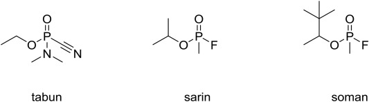
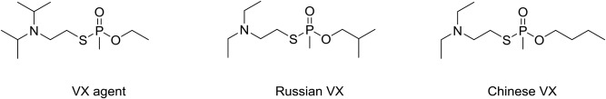
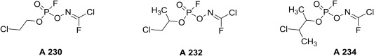
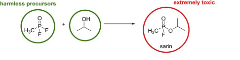
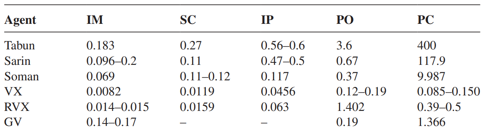

This research article provides a general overview of nerve agents, specifically the exposure and the effectiveness
of each group. The nerve agents are assorted into 3 groups, Novichok (A), German (G) & Venomous (V). Nerve agents
with increased inhibition of the enzyme Cholinesterase will lead to an increased likelihood of fatality. While
factoring in the method of exposure, we can conclude that A-series agents have the highest toxicity and an
increased risk of fatality if exposed even in extremely small doses. Dosage testing is measured using LCt50 & LD50
values (toxic unit and median lethal dose).
Limited research has been done on A-series agents due the lack of Russian publication on the topic. Though has
been they found to have several advantages over other nerve agents through research published by
Franca, C,C,T., et al. who of which has found that compounds A-230, A-232 & A-234 have the lowest LCt50 and
LD50 values. (Bajgar, J., 2012)
Introduction
Nerve agents are a group of highly poisonous chemicals specifically engineered for chemical warfare. They
are part of a group called organophosphates (OP) and were originally developed as insecticides & pesticides.
Nerve agents can be be absorbed through skin, inhalation & digestion. The danger lies in its ability to bind
to Acetylcholinesterase (AChE), an enzyme responsible for the breakdown of the Acetylcholine, a key
neurotransmitter used to carry messages from the brain to your muscles. Nerve agents were first created developed
in the 1930s by Germany and were subsequently named Group G or G-series agents. (Johnson et al., 2015).
What are Nerve Agents do?
Nerve agents are, as the name suggests, chemicals that affect the nervous system. These chemicals inhibit the
enzyme AChE by attaching themselves onto them. AChE inhibition accounts for major life-threatening effects of
nerve agents (Tokuda et al., 2006) AChE is responsible for the
breakdown & degradation of Acetylcholine (ACh), a neurotransmitter found in nerve terminals. ACh is responsible
for the stimulation of the secretion of bodily fluids (sweat & saliva) & the contraction of muscles.
(Moyer, R.A., Sidell, F.R., Salem, H., 2014) When AChE is inhibited,
it blocks the breakdown of ACh. This leads to the over accumulation of ACh receptors resulting in overstimulation.
By overstimulating it leads to an increase in the secretion of fluids and seizures. As well as seizures, paralyse
to all muscle groups. This will prevent the diaphragm from relaxing preventing respiration from occurring,
leading to death.
What is the chemical composition?
All compounds contain a phosphate ion double bonded to an oxygen ion. This forms the backbone of the compounds
and is where the name organophosphates comes from. While being great pesticides they are extremely lethal.
From the differences, the G series has Fluorine (F) bonded to its Phosphorus (P) core. Whereas V series has
Sulfur bonded to its core. Another difference is G-series agents are esters (Oxygen is in the middle of the
chain) but V-series agents have Oxygen esters & Sulfur esters in the middle of the chain. Novichok agents
have similarities from both groups as V-series & G-series agents were used for development. Most Novichok
agents have the same core & the same branched groups with the Phosphorus core being surrounded by the same
groups.

Figure 1. Example of 3 G-series agents (Kuca, K., 2018).

Figure 2. Exmaple of 3 V-series agents (Kuca, K., 2018).

Figure 3. Example of 3 A-series agents (Kuca, K., 2018).
Novichok agents were made to be in binary form. This means two inert substances that are combined prior to
delivery to create the active nerve agent. (Chai, P., 2018) Nerve agents, especially A-series agents
are stored that way for a number of reasons. Firstly, having 2 seperate chemicals limits the likelihood of
contamination and accidental exposure. Secondly, it increases the shelf life as in unitary form, nerve agents
are quite unstable and have a short shelf life. Finally, in 1997, the Chemical Weapons Convention (CWC) was
ratified and Russia was developing its own nerve agents. Novichok intermediates (binary agents) are not
included on the CWC list of banned items therefore, Russia has circumnavigated restrictions imposed on the
production of nerve agents. (Kuca, K., 2018)
What are the effects on the human body?
For acute exposure, the most common sign is miosis (pinpoint pupils) & visual darkness. (Tokuda et al., 2006).
A more general symptom is headaches and nausea. This is caused by inhaling fumes and lack of orientation.
The primary cause of rapid death after acute nerve agent exposure is respiratory failure. (Carey et al., 2013)
Exposure through inhalation and ingestion can often take within seconds to minutes to display deteriorating
health effects. Sense of smell is a good way of detecting nerve agents especially with impure nerve agents.
For example, in the Tokyo Subway Attacks in 1990s, the Sarin used gave off a fishy musty smell due to excess
Isopropyl Alcohol (Murakami, H., 1997) leading to a purity of only 35% (Tokuda et al., 2006). The 600ml of Sarin
would spill out forming puddles and vaporize diluting itself with the air. The vaporized Sarin would attach
itself to airborne water particles. These would then attach themselves to pieces of clothing & any exposed skin.

Figure 4. Showing the binary agents associated with the formation of Sarin
Note the mixing of Isopropyl alcohol to make Sarin (Kuca, K., 2018).
How much does it take to be lethal?
As stated from before, there are many ways that nerve agent exposure can occur. Some forms require a higher
dosage to be lethal. It also varies from group to group as to how lethal each nerve agent can be. A study
was conducted by the University of South Bohemia on rats was used to determine these LD50 figures
(Shown in Figure 5). Rats are used for acute toxicity testing, due their behaviour & genetic characteristics
closely resembling those of humans.

Figure 5. Toxicities of Some Nerve Agents in Rats at Different Routes of Administration (Bajgar, J., 2012).
The headings in Figure 5, are intramuscular (IM),subcutaneous (SC) - under the skin, oral (PO),
intraperitoneal (IP) - injection, percutaneous (PC) - on the skin. From Figure 5, we can see that intramuscular
has the least LD50 due to the fact that nerve agents target the neuromuscular junction to prevent
ACh from breaking down. Figure 5 also shows VX has a lower LD50 than all G-series agents.
Regarding human testing, such a thing simply cannot occur due to the fact, nerve agents are extremely
potent even in low quantities. This isn't to say such a case hasn't been studied before. There are
numerous poisonings using; Sarin, VX & Novichok agents. There has also been widespread documentation
on the effects of Sarin on humans from the Tokyo subway incident as well as the Matsumoto incident both
of which occurred in the mid 90s. With many of the people surviving the attacks, it was easy for
doctors to gather data on how Sarin affects people over a short course as well as long course of time.
Conclusion
The ability to bind onto AChE and not be removed is what makes nerve agents lethal. The time at which it takes
for nerve agents to show symptoms is fast and can be without warning especially the dark vision. Furthermore
some of the early symptom signs are very common among colds and flu so people can be very dismissive. The long
lasting effects are just as bad with paralysis. Overall, the lack of warning signs plus immediate common symptoms
make nerve agents a silent killer when in pure form.
References
Bajgar, J., (2012) Nerve Agents Poisoning and its Treatment in Schematic Figures and Tables
Available at: https://tinyurl.com/msmdhkb9
(Accessed: 18 October 2023)
Braga, F.,(2020) Acetylcholinesterase inhibitors (nerve agents) as weapons of mass destruction: History, mechanisms of action, and medical countermeasures, Neuropharmacology Journal on ScienceDirect
Available at: https://tinyurl.com/bddtnwbw
(Accessed: 28 October 2023)
Chai, P., (2018) Novichok agents: a historical, current, and toxicological perspective, Toxicology Communications, 2, pp. 45-48.
Available at: https://tinyurl.com/mrczme2j
(Accessed: 17 October 2023)
Franca et al, (2019) Novichoks: The Dangerous Fourth Generation of Chemical Weapons, International Journal on Molecular Sciences, 20(5),
Available at: https://tinyurl.com/y9r8pkyn
(Accessed: 14 October 2023)
Johnson, et al., (2015) Historical perspectives of chemical warfare agents, Handbook of Toxicology of Chemical Warfare Agents, pp. 7-15.
Available at: https://tinyurl.com/4ns75b2f
(Accessed: 27 October 2023)
Kuca, K., (2018) Chemical warfare agent NOVICHOK - mini-review of available data, Food & Chemical Toxicology Journal, 121, pp. 343-350
Available at: https://tinyurl.com/mrxddsbj
(Accessed: 26 October 2023)
Moyer, R.A., Sidell, F.R., Salem, H., (2014) Nerve Agents, Encyclopedia of Toxicology, pp. 483-488.
Available at: https://tinyurl.com/y434b949
(Accessed: 17 October 2023)
Murakami, H., (1997) Underground, pp. 129.
Tokuda, et al., (2006) Prehospital management of Sarin nerve gas terrorism in urban settings: 10 years of progress after the Tokyo subway sarin attack, Resuscitation, 68(2), pp. 193-202
Available at: https://tinyurl.com/yc53edd2
(Accessed: 30 October 2023)
Yanagisawa, N., Morita, H., Nakajima, T., (2006) Sarin experiences in Japan: Acute toxicity and long-term effects, Journal of the Neurological Sciences, 241(1), pp. 76-85
Available at: https://tinyurl.com/bdz8nn8f
(Accessed: 4 November 2023)
Conference paper: What makes nerve agents lethal and how deadly are they?